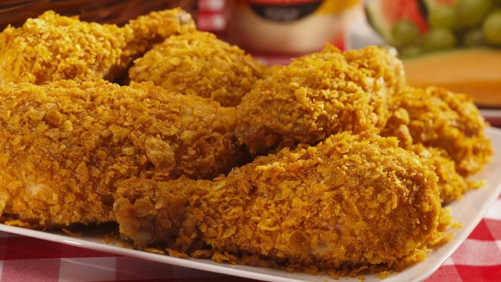

Austin's Fried Chicken Recipe

This is my favorite recipe for southern fried chicken
Everyone that has tasted southern fried chicken knows the magic of that
tangy, spicy, crunchy goodness. I grew up eating the chicken from my mom and
aunts, and it carries a special place in my heart. Follow this recipe or
try your own modifications.
Ingredients
- 8 chicken drumsticks, thighs, or combination
- flour
- sal and pepper
- hot sauce
- a big appetite
Steps
- Soak the chicken in hotsauce overnight
- Season with salt and pepper to taste
- Coat the chicken in flour
- Fry the chicken until it is done